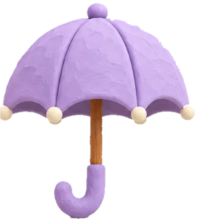

Your voice
Your voice, even when you’re away.
Read a short script aloud once, on any evening. From then on, Nightlight reads every story in your voice: on work trips, on late shifts, and on the nights you’re simply too tired to do the voices.

Recording your voice8 of 12
“The owl switched off the lamp and said goodnight to the whole hill.”
Read it the way you would at bedtime